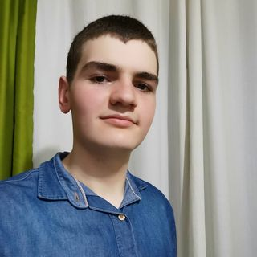

Thiago Bodnar

Sou brasileiro nascido em Papanduva SC e criado em Major Vieira SC e estudo Desenvolvimento Web na
Trybe
Sou bom cozinheiro
Jogo Tênis de Mesa
Trabalho como padeiro
Blog Favorito
Índice
foto perfil